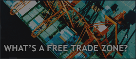

Bringing technology
and operational excellence.

Imagine an international gateway where goods and merchandise flow across borders. Where countries lower taxes, reduce red tape, and eliminate road blocks. Where companies import goods and merchandise directly into a Free Trade Zone - and then ship products out duty free.
The Miami Free Trade Zone connects North America, Europe and Asia to Latin America and the Caribbean via direct air and sea transportation links, plus rail and expressway. Operated by FTZ World Services, the 47-acre Zone (#372) saves companies money and time.

FTZ World Services is your ticket to the world. We're the licensed operator of the Miami Free Trade Zone, the "Gateway to the Americas." We process as much as $1 billion in goods from more than 70 countries each year.
A leader in free trade zone operations, FTZ works magic behind the scenes, offering logistical and operational excellence. FTZ's many services include technology, public warehousing, yard storage and on-site U.S. Customs. Other U.S. free trade zones also benefit from our technological support and operational consulting.

FTZ World Service has the unique advantage of being the licensed operator of the Miami Free Trade Zone. We offer state-of-the-art facilities and a stellar track record in zone management, plus technological support, warehousing, and storage. Because FTZ understands U.S. Customs rules, we can use our software and logistical expertise to speed up your paperwork, remove road blocks, and get products to market cheaper and faster. We save companies across multiple industries thousands of dollars per month in fees. We'll give you less to manage and more dollars to keep in your pocket.